All unbilled items in the job are displayed in the list.
Using this window we can identify the items that we want to bill out, and also specify the total amount to invoice if it is to be different from the items we have specified. In this case we want to invoice just the preliminary meeting and the consultants report, so we need to turn the highlighting off for the other items.
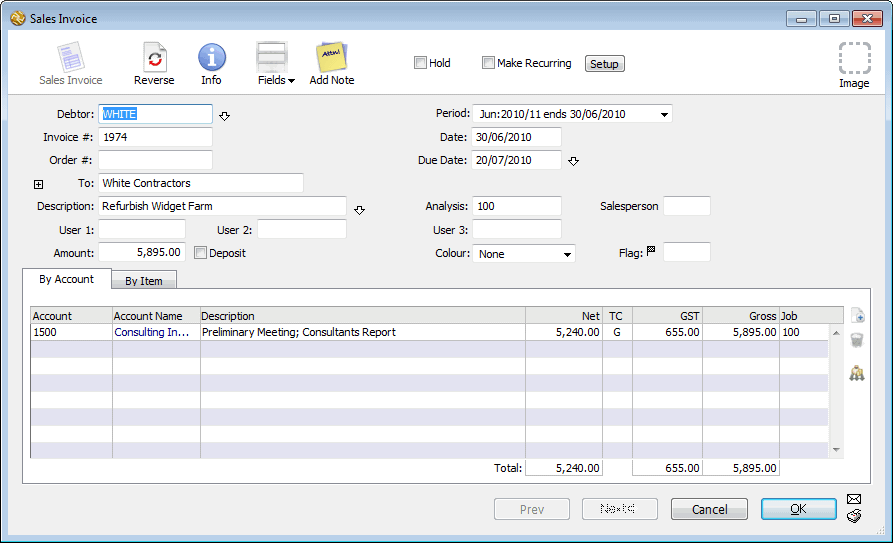
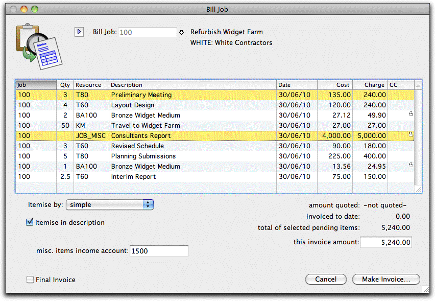
Note that as you click on each item in the list the invoice total changes.Before we can generate the invoice, we need to specify how we want the information grouped on the invoice and (as this is the first time we have used this command) specify some defaults.
Turn on the Itemise in description option
It is important to emphasis that this window contains the accounting details of the invoice, and is not the invoice itself. This will be printed according to whatever invoice form we choose, although it will have to draw its base information from this screen.
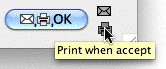
The invoice will be posted and the Print Sales Invoice settings window will be displayed.If this is on, the information in the Memo field of the job sheet items is
Set the Post and
Print options
transferred into the description of the invoice.
Type “1500” into the Miscellaneous Items Income field
This is the account that MoneyWorks will use on the invoice if it cannot determine the income account to use from the job sheet information.
Click Make Invoice
A Sales invoice entry screen will be displayed, complete with the information from the items we have selected. We could if we want change any of the information (such as the story) at this point.
ensure that the Output to menu is set to Preview, and click the Preview
The final invoice will be displayed on the screen. The layout of the invoice will depend upon what form was selected. You can design your own forms using the forms design features of MoneyWorks.
Note that in this instance all the information about the items used for the job have been itemised into a single line. It may be that you want to show the quantity of each resource used, or the date upon which work was done. These options are available, and are set using the Itemise By pop-up menu in the Bill Items screen.
Click the Processed tab in the Job Items List window
You can see that the items that we have included in the invoice have been transferred to this tab. They no longer show under the pending items. The Processed tab will list all job items billed out.
MoneyWorks comes with a number of reports and forms that allow you to
Set the settings to those displayed above
Click on the page setup button and set the report orientation to landscape
The Job history report will be displayed
This provides a complete summary of the job, in this case
The Page Setup
button
monitor the costs and progress of a job. Even better, if you don’t like our reports, and experience shows that everyone has different job reporting requirements, you can use the report writer to design your own.
The Detailed Job History report is used to provide a definitive summary of a job. To print this:
The job list will be displayed. To print the report for a job (or a number of jobs), simply highlight the job(s) in the list and choose the report in the sidebar.
In this case we wish to report on the Widget Farm job, which is still active.
Click on Detailed Job Summary in the Reports section of the list sidebar
The settings for the report will be displayed.
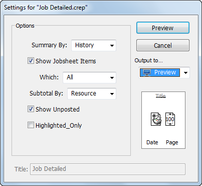
organised by resources used. It includes details of the quantity used, their cost and recovery, and the amount remaining to recover. It also includes a list of any unposted disbursements against the job, so you can see additional charges that have not yet been finalised.
A number of job analysis reports are also provided with MoneyWorks, and you can access these through the choosing the appropriate one from the Job Reports item in the Reports menu. However (and perhaps more importantly, as job requirements vary so much from organisation to organisation), you can create your own analysis reports3. For example, you might want a report on who has worked on what job, or what are the actual resources used on a job as compared to the budgeted resources.
Using the Forms Designer, you can also create your own job forms to help record and retrieve information about a job. A number of job forms have been provided for you: the Job Bag Form for example will print off an empty time sheet for the job, whereas the Job Work Statement will print off a form that itemises and summarises the time and disbursements against the job.
To print a job form:
Choose Command>Print Job Form
The Print Job Form will be displayed.
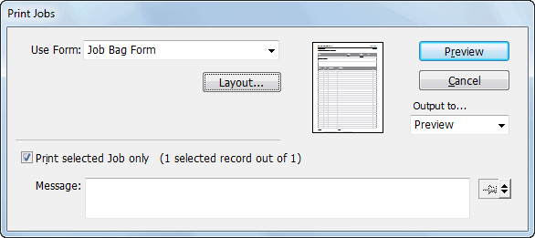
Click Print (or preview)
A form will be printed for each job highlighted in the list.
1 GST/VAT/Sales Tax will be added to this if necessary when the job is invoiced.↩︎
2 You would probably have a special code called “Consultants Employed” or some such thing. The demo file doesn’t have one of these, so we’ll just use the Purchases account.↩︎
3 For details on analysis reports, see Analysis Reports. A tutorial on creating analysis reports starts here.↩︎
Tracking expenses, time and other resources associated with job or project work is easy in MoneyWorks.
There are several levels of job tracking available, and your own needs will determine which is most appropriate.
You can tag transaction detail lines with a job code. Thus if you purchase something specifically for a job, or prepare an invoice for a job, the appropriate parts of the transaction can be tagged to the job. Subsequently you can use an analysis report to look at the revenue and/or costs for the job.
Job tagging only operates on actual accounting transactions. When you make a purchase or a sale, you tag it to a specific job. Time sheets and stock requisitions cannot be entered.
To enable job tagging you must set the Show Job column in transaction entry window option in the Job Control preferences. Job tagging is discussed in The Job file—this chapter deals primarily with Job Tracking.
You maintain a job file, and a job sheet for each job. The job sheet can record resources used in the job such as labour, disbursements and stock requisitions. Any accounting transactions that are tagged to the job will automatically be entered into the job sheet when the transaction is posted.
Thus the job sheet will accumulate a complete history of all expenses and income related to a job, as well as all resources used. Summary reports can be printed from the job file to help invoicing, or you can use the Bill Job command.
To enable job tracking you must set the Enable Job Costing and Time Billing
option in the Job Control preferences.
Note: Because of the large volume of information which must be kept for full job tracking, your MoneyWorks file may become very large. To keep your file size at a reasonable level, you should consider deleting each job as soon as possible after you no longer require to report on it.
You need to specify in the Job Control Preferences that you want to do job control, and what degree of job control you want.
Before you can start using jobs, it must be enabled in the Preferences.
The preferences will be displayed.
Click on the Jobs tab
The Job Control preferences will be displayed.
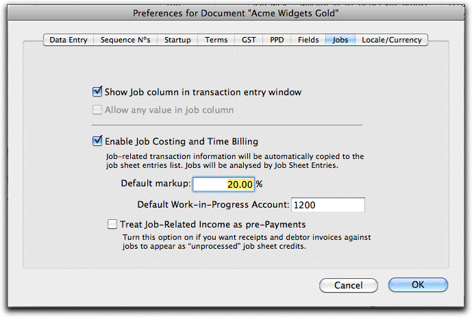
The job control preference options are:
Show Job column in transaction entry window: If set, an additional column, the Job column, will be displayed in the detail line area of the transaction entry screen. This column can be used to enter a job code to tag that detail line as being associated with a job.
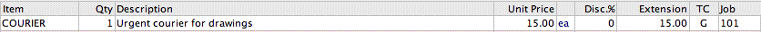
The additional job column will appear in all transactions except journals. It is not possible to associate a journal with a job.
You must set this option for job tagging.
Allow any value in job column: Normally when you type an entry into the job column of a transactions detail line MoneyWorks will check to see that the entry refers to a valid job. If the Allow any value in job column option is set, you will be able to type any value into the job column. This option and the Enable Job Costing and Time Billing option are mutually exclusive.
This option cannot be set if you want to do job tracking.
Enable Job Costing and Time Billing: With this option set, any transaction detail lines that are tagged to a job will be transferred to the Job Sheet file when the transaction is posted, thus automatically tracking direct costs associated with a job. In addition various job billing facilities become available.
Setting the Enable Job Costing and Time Billing option enables full job tracking.
Default Markup: The default percentage markup applied to the cost of items used in the job.
Default Work-in-Progress Account: Any work done on a job that can be (but which has not yet been) invoiced out is called work in progress. This is an asset for your organisation, because at some stage in the future it can be converted into cash.
As an asset, it can appear on the balance sheet, and you can transfer it there by using the Work-in-Progress Journal command. The default work in progress account is the default account code for new jobs.
Treat Job-Related Income as Pre-Payments Turning on this option will cause job related income transactions to be transferred as pending (instead of processed) job sheet items. Turn this on if you create invoices (or receipts) coded to the job before work on the job has been done (e.g. a deposit or pre-payment on a job), and this income needs to be offset against subsequent work.1
The job file contains summary details about particular jobs and is presented as a list, with sidebar tabs representing the possible status for a job. For job tagging there is only one tab, whereas for job tracking there are a set of tabs that represent the job progress.
To view the Job list:
The Jobs list will be displayed
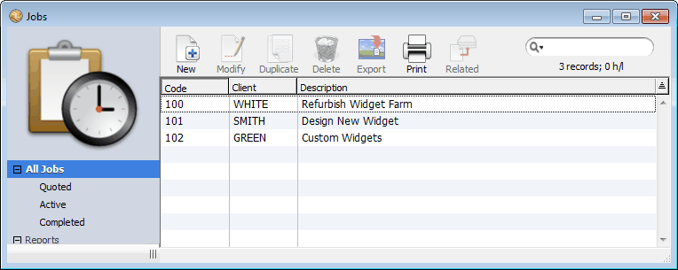
The sidebar tabs are:
Quoted: This is for jobs or projects for which you have quoted or tendered, but for which the quotes or tenders have not yet been accepted (or declined) by the customer. When new jobs are created they are automatically made as Quoted.
Active: This is for jobs which are currently in progress. Charges and job sheet entries can be made against active jobs, and they can also be billed out. When a charge or job sheet entry is made against a quoted job, it
automatically becomes active.
Completed: This is for jobs which are essentially complete. A job becomes complete when an invoice is created for it with the Final Invoice option set. You can only make charges and job sheet items against a completed job if you have the Use Completed Job privilege set — see MoneyWorks Privileges.
All Jobs: All jobs are listed under this tab (this is the only one available if full job tracking is not on).
Jobs can be created automatically from quotes using the Accept Quotes as Jobs
command — see To turn a quote into a job.
To manually create a new job from the Job list:
The Job entry screen will open
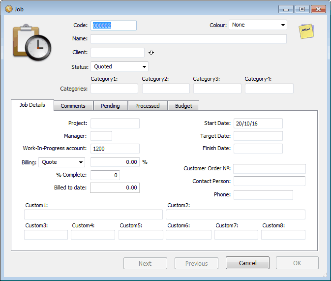
This is where you can enter or view the details of a job. The window is tabbed—the background information to the job is contained in the Job Details tab, while general comments can be entered under the Comments tab. The other tabs show pending, processed and budgeted work against the job.
Code: A unique code to identify the job—up to nine alphanumeric characters.
Name: A brief (255 character) summary of the job.
Client: The code of the client for whom the job is being done. You must specify this, and the client must be a debtor (so you can invoice them).
Colour: Colour is for your own use to easily identify jobs (e.g. Red for urgent).
Status: The status of a job can be Quoted, Active or Complete, and determines the tab in the Job list under which the job is displayed. This is normally maintained by MoneyWorks, defaulting to Quoted for new jobs, and changing to Active when a job sheet item is put against the job.
Categories: These are used in the same way as Product and Name categories for reporting, analysis and enquiries.
Project: If the job is a part of another job, the parent job code can be specified here. If used, the job must already exist.
Manager: The initials of whoever in your organisation is responsible for the job.
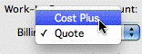
Work-in-Progress account: This will be by default the work-in-progress account specified in the job preferences. If you change it, it must be a current asset account. It is only used by the Work-in-Progress Journal command.Billing: The Billing field reflects the basis on which you intend to invoice the job. There are two billing methods:
Quote: Used where you have provided a fixed price
quotation for the job. The amount of the quote is entered into the Quoted field.
Cost Plus: Used where you intend charging for resources and products use in a job at a rate based on their cost. The percent markup that you will add to resources is entered into the markup field. For new jobs this will default
to the value that you set in the Job Control preferences.
Note that MoneyWorks always tracks the costs of the job, regardless of what billing method you have selected.
Billed to Date: You cannot alter the Billed to Date amount—it is updated automatically whenever a sales invoice is posted that contains a detail line tagged to the job.
% Complete: For your own information, the percent of the job that has actually been compete. This is not maintained by the system.
Start Date: The date on which the job starts. Will default to today’s date.
Target Date: The expected end date of the job.
Finish Date: The required end date of the job.
Customer Order No: The client’s order number for the job.
Contact Person: Who (at the client’s organisation) has responsibility for the job.
Phone: The phone number of the contact person.
Custom: Four fields for your own use. The first two can hold 255 characters, the last two 15 characters each.
Comments: Any comments (up to 1020 characters) about the job. This field is available under the Comments tab of the Job entry screen.
To change information about a job:
Change any information that you require
Click OK
Note that if you change the job code2, the job will be disassociated from any existing job sheet items and you will not be able to invoice or delete these items.
A job can only be deleted when its status is Completed. To delete a job:
Set the tab in the Job list window to Completed
Highlight the job(s) to be deleted
Choose Edit>Delete Job
You will be asked for confirmation before the job is deleted.
Note: When the job is deleted, all associated Job Sheet entries, whether billed or not, will also be deleted. You should check that a job has been fully invoiced before deleting it. Transactions associated with the job are not affected when the job is deleted.
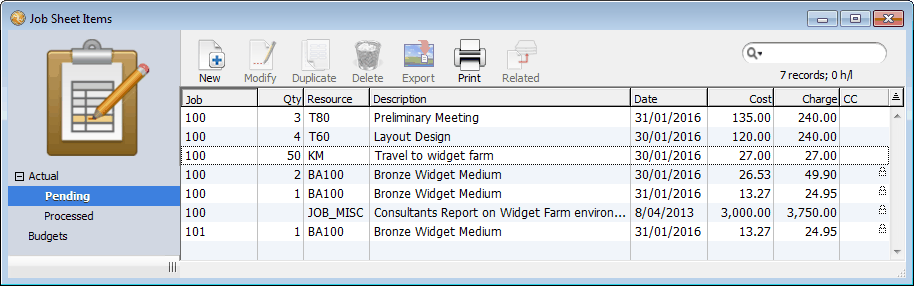
The job sheet file records individual entries and budgets against jobs. It is only available if the Enable Job Costing and Time Billing job preference option is set. The entries are displayed in a standard tabbed list view.Entries against a job can include resources used such as time, disbursements, stock and products. These can be actual or budgeted amounts.
The sidebar tabs in the view are:
Actual: All actual job sheet items (both Pending and Processed).
Pending: All actual job sheet entries that have been entered but not invoiced. Processed: All actual job sheet entries that have been invoiced to the client. Budget: All budgeted job sheet items.
Actual job sheet entries can be entered into any of the Actual sidebar tabs, or can be created automatically when a transaction tagged to a job is posted.
Budget job sheet entries can only be entered in the Budget sidebar tab, or created automatically when a Quote is accepted as a Job — see When a quote is accepted.
The Job Sheet Items file will be displayed.
Choose Edit>New Job Sheet Item or press Ctrl-N/⌘-N
The Job Sheet entry window will be displayed.
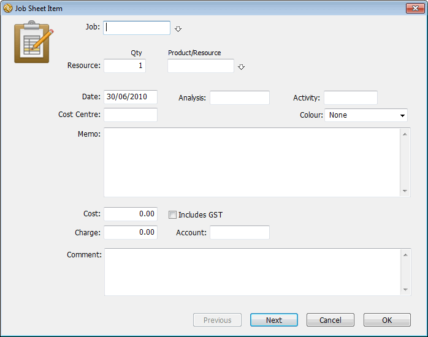
The job description will be displayed, and any selling Sticky Notes
associated with job will appear.
If you enter an invalid code the choices window will be displayed, allowing you to select the correct code or create a new job by clicking New.
This can be any class of product that you sell.
In the Product/Resource field, enter the code for the item used
The item description, sell unit, memo and the pricing details will be displayed. This field must be filled in for every job sheet entry.
If you enter an incorrect code, the choices window will be displayed. Select the correct item by double clicking, or click New to create a new product. Note that the item’s barcode can be used instead of its code.
If the product is a stock item, a message is displayed in the window and special action is taken by MoneyWorks — see Stock requisitions.
Note: If you have Location Tracking turned on, a Location field will be available to enter the location from which the stocked item was taken (leave empty for the default location.
Similarly if you have Serial/Batch tracking enabled a Serial/Batch field will be available for the serial/batch number of the serialised inventoried items.
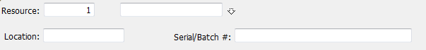
This is the date that the resource was used on the job.
The analysis field can be used for whatever you require—e.g. the initials of the person whose job sheet is being entered. Note that this and the Activity Code field can be controlled by Custom Validations.
Enter an Activity Code, if any
Unless associated with a custom validation, this is a free form code.
Enter the Cost Centre for the product if desired
The cost centre must be a valid department code. If the Income Account when Selling field of the item is set to a departmentalised account, this department will be automatically entered into the Cost Centre field.
This defaults to the description of the resource entered. It can be up to 255 characters long, and is a description of what the entry is for. It will appear on the invoice if the Itemise in Description option is set in the Bill Job window.
The Cost, Charge and Account fields will be filled out automatically for you based on the resource used, and can be altered if required. Costs and charges are always assumed to be in the local currency.
This is for internal use only, and will not appear on any invoice.
If Cancel is clicked, the entry is not saved.
Configuring the Job Sheet Entry Window: You may not wish to use all the fields in the Job Sheet entry window, or, if you are entering batched information, a given field might always contain the same information. You can configure the Job, Product/Resource, Analysis and Cost Centre fields to retain their value and/or to be omitted when you tab through the fields. To configure a field. You can also configure the Analysis and Activity Codes to require custom validations:
A pop-up menu with configuration options will be displayed.
The available options are:
Tab Into: Pressing tab while in the previous field will move you into this field;
Don’t Tab into: The field will be bypassed when you press tab;
Remember Value: The previous value that you typed into this field will automatically appear in a new job sheet entry;
The field will be blanked between each new entry.
When the Enable Job Costing and Time Billing Job preference item is set, details from each transaction detail line that is tagged to a job will be automatically transferred to the Job Sheet list when the transaction is posted., e.g. the line:
when posted creates the following Job Sheet Entry:
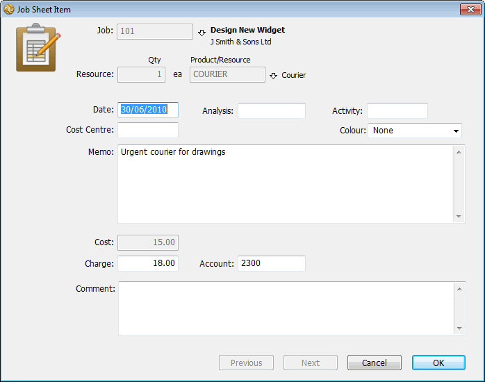
Entries that are automatically created from a transaction in this manner should not normally be altered or deleted—this is signified by the display of a padlock in the right hand column of the Job Sheet Items list. The following is transferred:
Transaction Record Job Sheet Entry
Transaction.TransDate Date
Detail.JobCode Job
Detail.Qty Qty
Detail.StockCode Resource
Detail.Unit Unit
Detail.Description Memo
The department suffix from the detail. account (if any) Cost Centre
Transaction.Analysis Analysis
Detail.AccountCode Account
The Cost will always be the current standard cost of the item. The Charge will vary according to the Job Pricing settings in the product .
Transferring from service transactions: It is mandatory to specify a product in the Job Sheet Entry file. However in a service transaction no product information is given. When the detail line from a service transaction is transferred, MoneyWorks will give it a product code “JOB_MISC”, and a quantity of 0.
If the product JOB_MISC does not exist, it will be automatically created. The cost of the item will be taken from the transaction detail line, and the standard markup for the job (or the default markup if the job is on a quotation basis) will be used to determine the charge price for the job.
If you want to use a different pricing regime for these items, you should create the JOB_MISC product yourself, and set its job pricing as desired.
You can enforce the entry of a job code in a service transaction by setting the Job Code Required option in the Accounts entry screen.
Transferring from transactions involving inventory: If you tag a transaction detail line that refers to a stocked product, the inventory levels for the item on the detail line will not be affected. If the item is purchased, it is assumed that it is being purchased specifically for the job, so the item’s cost of goods account is debited instead of the stock account3; if it is being sold, it is assumed that the item has already been requisitioned from stock through the job sheet items, so the income account for the job is credited instead of the stock account. But see Stock Requisitions for the exception to this.
Transferring from Income Transactions: Normally tagged income detail lines will be transferred as processed job sheet items, on the assumption that the work has already been done for the job. This is what normally happens when you post an invoice created by the Bill Job command. However if, for example, a deposit has been prepaid on a job, this may not be true. Income detail lines can be transferred as pending job sheet items if the preference option Treat Job Related Income as Pre-Payments is set. This allows you to offset previous income against work done.
Pending job sheet items can be modified or deleted, although entries that have been automatically created from a transaction record (shown with a grey padlock next to them) should not need to be modified or deleted (if they are, the job sheet summary will no longer be the same as the accounting record).
Entries that have been processed (billed) cannot be modified, but they can be deleted.
Note: Pending job sheet entries that involve stocked products can be deleted, even though a stock requisition journal was made (and posted) when the entry was made. If the item was returned to stock, make a correcting job sheet entry with a negative quantity instead of deleting the original.
To modify job sheet entries:
Choose Edit>Modify or press Ctrl-M/⌘-M
Double click a single record to modify it.
Click OK or Next to save the changes
An alert will show if the record cannot be modified.
Note: If you change the code in a job sheet item that was created when a transaction was posted, the code in the appropriate detail line of the originating transaction will also be updated.
There are certain restrictions (discussed above) to deleting job sheet records.
Choose Edit>Delete Job Sheet Items
A confirmation box will be displayed
Job Sheet Entries are also deleted when the job is deleted. Note that you should not delete a Job until you no longer require reports on it.